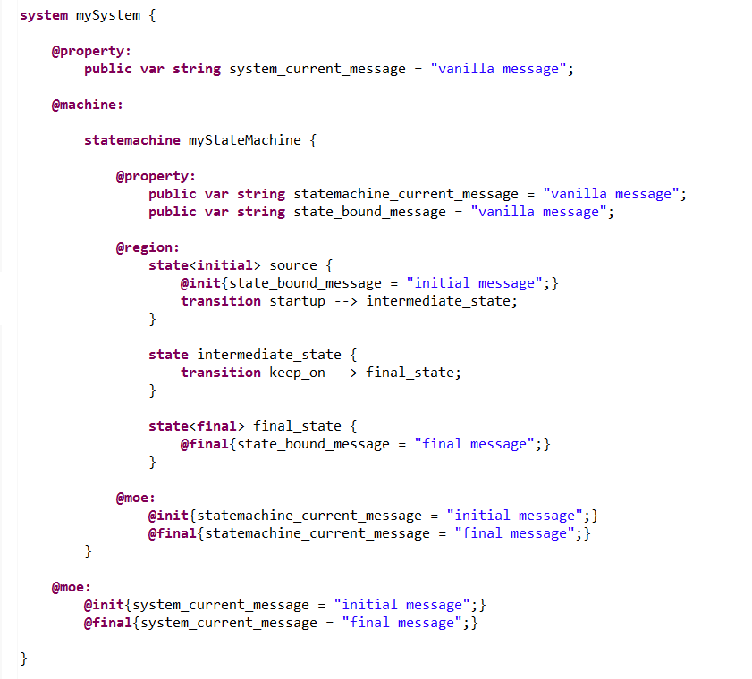
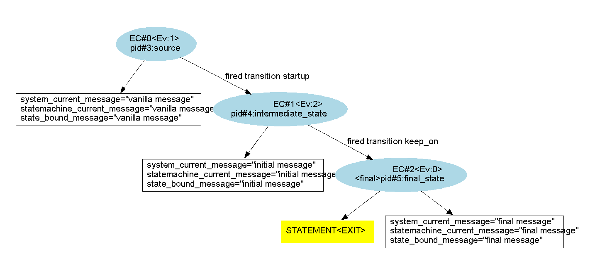
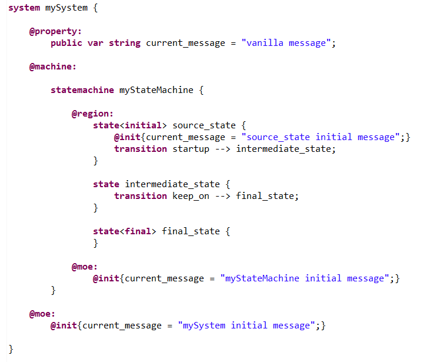
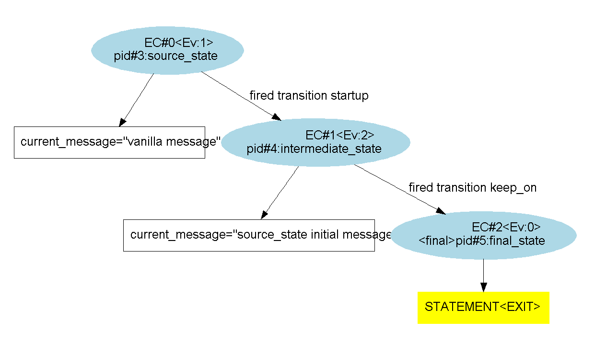
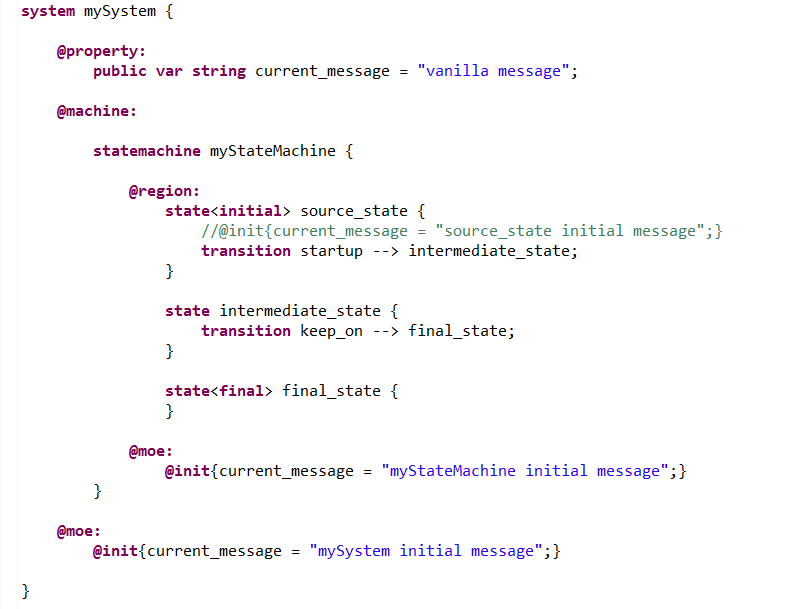
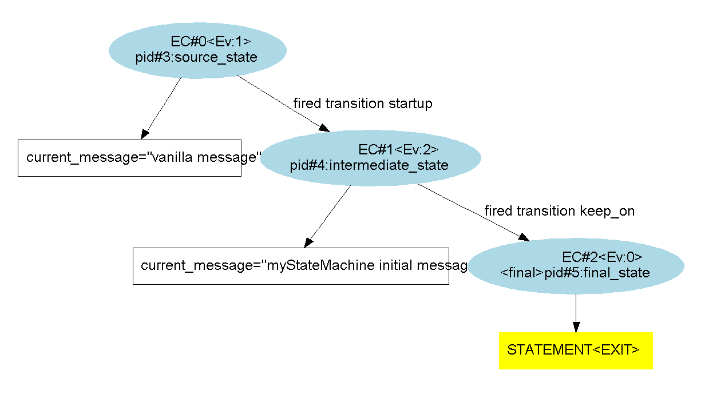
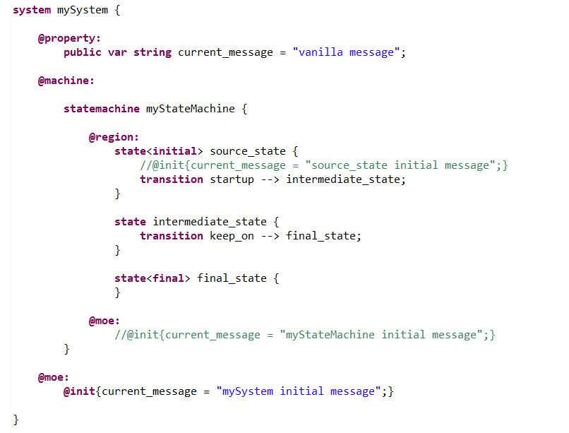
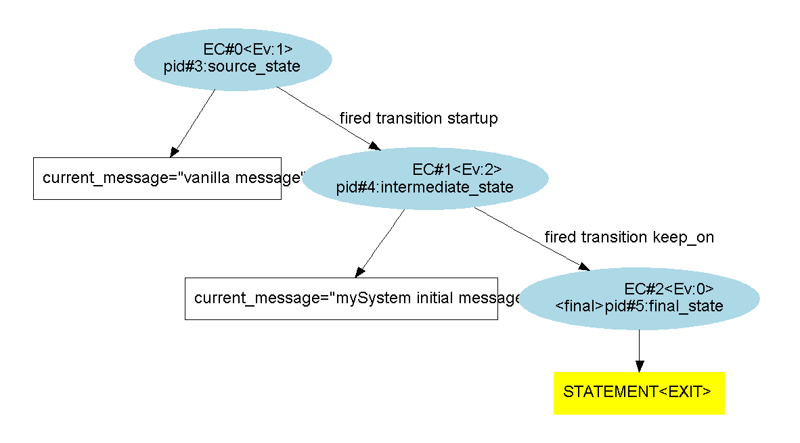

The instructions within an "@init{...}" activity primitive are executed at the initialization of the parent object.
It can naturally (but not exclusively) be implemented for any composite, "initial" or "start" state. It can also be implemented within the "@moe:" section of the system.
This is where the user can, for example, set an initial value to variables.
According to the kind of parent object; the initialization will follow different patterns.
The system's "@init{...}" activity primitive can be implemented in the "@moe:" section. From that position, we can only access variables and port that are defined in the system itself.
The statemachine's "@init{...}" activity primitive can be implemented in the "@moe:" section. From that position, we can only access variables and port that are defined in the parent system, in the statemachine itself, and in the statemachines that share the same depth level relatively to the system (i.e. we can't access properties of states or submachines...).
The pattern of initialization is the following :
"or" statemachine :
"and" statemachine :
Remark : The user must make sure that all initializations terminate. Otherwise, its symbolic transition system might get blocked and not be evaluable later on. For this reason :
"initial" state :
"start" state :
Remark : for "start" state which are basic states, we stay in the state after initialization. Therefore, the "@run{...}" primitive and the outgoing transitions are not evaluated immediately as it is the case for "initial" states.
In the following example, we'll see implementations of the "@init{...}" primitive of a system, an automaton statemachine and an initial state.
The code is the following (there are also "@final{...}" primitives used but it's not the point) :
When executing an exploration, we get the following graph, where we can see what changes have been made on the variable values at each steps of calculus :
In the following example, all three "@init{...}" primitives of the previous example try to modify the same variable. It will allow us to find out the order or priority in which those modifications are made.
The code is the following (we've removed the "@final{...}" primitives to simplify the example) :
The resulting graph is shown below; we see that the first retained value is the initial state's value :
To see what's next in the priority order, we remove the initial state value assignment instruction :
The resulting graph is shown below; we see that the second retained value is the statemachine's value :
Finally, with the following code, we can verify that the system value is also taken into account :
 Finally, the priority order is from the inside to the outside. In other words, the highest priorities are the innermost "@init{...}" primitives.
The priority order is the exact opposite of the one of the "@final{...}" primitives.